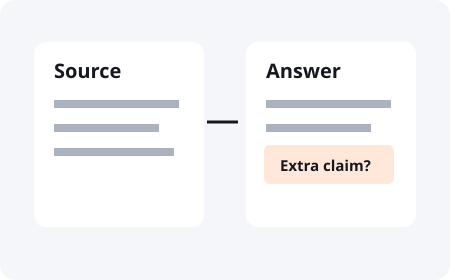

Answers / Practical AI Safety
How to fact-check
your AI assistant.
Open the source. Check the claim. Keep the gap visible.
To check an AI answer, find the claim you plan to use and open the source behind it. Check whether that source supports the same claim, for the same situation and date. Asking the assistant if it is sure is not an independent check.

Why does ChatGPT make things up?
ChatGPT can give a confident answer that is wrong, including invented references. A linked source is a starting point for your check, not proof by itself. See Does ChatGPT tell the truth?.
Fictional source and answer
Spot the extra claim.
Source note: The booking form is ready for internal review. No public launch date has been set.
Assistant answer: The booking form launches on Friday.
The source confirms a review stage. It does not give a launch date. “Friday” is an unsupported addition.
See a supported answer
The booking form is ready for internal review. The source does not state a public launch date.
How do I check a citation?
Open the actual page or paper. Look for the passage that supports the claim, then check its date and scope. A real article can still be cited for something it never says. If the source is unavailable, label the claim unverified instead of filling the gap.
Can a prompt stop hallucinations?
A prompt can ask for sources and uncertainty. It cannot guarantee a true answer. Give the assistant a clear source and ask it to distinguish what the source says from what it infers. Review consequential claims yourself before using them.
A prompt to start the check
“Use this source for the answer. Show which passage supports each claim I will rely on. Label any inference. If the source does not answer the question, say what is missing.”
This is a request for better reporting, not an enforcement mechanism.
Keep a record you can revisit
Record the claim, the source, the passage, what remains unknown, and the decision you made. Use the answer-check worksheet. Keep sensitive data out of public issues and shared copies.